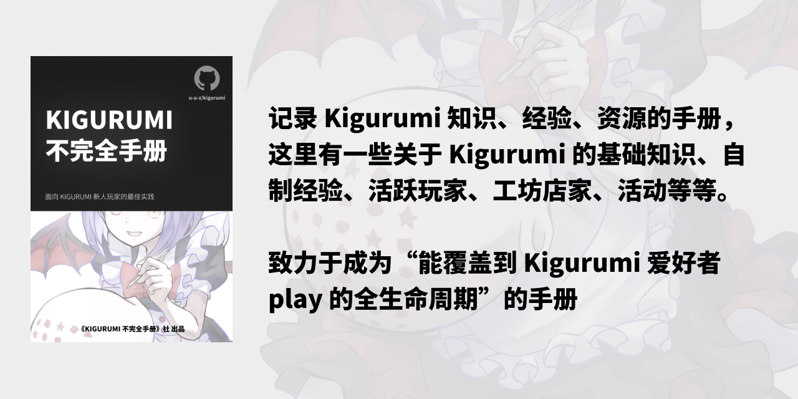

词条：Kigurumi
我最近在重新学习玩 Kigurumi，巩固一下细节，也写一个 “AWESOME KIGURUMI 手册”，供小白们使用（KIGURUMI 大佬可以另找教程），每周更新 1-3 讲。
这是一个记录 Kigurumi 知识、经验、资源的手册，这里有一些关于 Kigurumi 的基础知识、自制经验、活跃玩家、工坊店家、活动等等。致力于成为 能覆盖到 Kigurumi 爱好者 play 的全生命周期 手册，也可以称作他为：AWESOME KIGURUMI!!
how.kig.land 只是临时域名，未来会迁移到更好的域名。
- 👉 本手册是开放的，任何人都可以参与编辑、完善、改进、提交、发起 Pull Request。
- 👉 在线阅读本手册 网站 how.kig.land 👉 Github 仓库 u-u-z/kigurumi
- 👉 目录页面
- 手册的许可证采用 知识共享协议（署名-相同方式共享 3.0 中国大陆）
🛣️ 路线图
- 64 ⭐ Self-hosted 网站
- 128 ⭐ 内容、章节系统化（2024/09/17 阶段达成，正在进行 详见 ISSUES #14）
- 256 ⭐ 进阶内容、创建社群、支持 i18n、真的出个册子？
- 512 ⭐ 重建官网、创建沙龙活动
目录
入门
第 1 节：Hello Kigurumi | 进入章节
第 2 节：搞到 Kigurumi | 进入章节
第 3 节：与店家撕逼 | 进入章节
第 4 节：维护 | 计划中...
第 5 节：拍照 | 计划中...
第 6 节：Kigurumi 活动 | 计划中...
进阶
🚧 等待进展 ...
🎯 内容目标、计划
入门
- 能够让玩家 快速入门（待翻新）
- 安全事项、注意事项、法律及合规性
- 产品现存形式及多样性
- 产品的使用方式、玩家之间的娱乐形式
进阶
- 产品的运输、转移、外出携带
- 产品的维护、保养、修复
- 不同类型产品的使用体验差异
- 制作工艺相关（这是一个大的类目）帮助用户构建认知
- 产品的深度定制、个性化
应用
- 产品的社交、活动、展示
- 产品的历史、文化、未来
- 环保及可持续性
- 产品的价格区间、市场、供需
- 产品的未来发展、技术、创新
- 产品的售后服务及保障问题
- 与相关配件的兼容性问题
未来该模块将组织为“章节”标题 —— 2024/09/17
🧭 快速导航
- 🐣 快速入门 - 如果你还没有入手第一个 Kigurumi（或者还在观望），可以来看看这里，这里可以提醒你入门需要知晓的事项
- 🏠 工坊与店家 - 这里收录了一些 Kigurumi 工坊与店家，如果你想要入手一件 Kigurumi，可以来看看这里。
- 😋 开源/免费模型 - 如果您想很快上手制作，开源模型会是快速选择，当然你需要会做假发造型
- 🔧 自制篇 - 这里有一些自制的经验分享，如果你想要自制一件 Kigurumi，可以来看看这里。
经验篇
资源推荐
这里有其他的友站链接，任意门，有其他的玩家经营的地方，可以去看看
默认 SFW，⚠️ 则代表存在 NSFW 内容（非特殊情况暂时不在本文收录）
排名不分先后
网站
- KigerHub - 由 kiger 建立的好看，有用，开放的二次元 Kigurumi 门户站。致力于帮助新人，促进交流，让 Kigurumi 获得更多人的认可。
- cnkigurumi - 这是一个为爱发电的小网站 “希望可以为你带来快乐”
- kigguide - 一个致力于 Kigurumi 亚文化的小网站。
- openkig - 来我们的 Facebook 页面分享你的 Kig 作品吧！查看更多。下载。下载一个面具并进行 3D 打印！
- kigurumi-animegao.fr - 由 Odd_HD 与 Schizu_Emyu 合作托管和开发，旨在汇总与 kigurumi 爱好相关的信息。
- Kigurumi Mask Makers - 由 Celes Halcyon 编写：作为为动漫脸 Kigurumi（animegao kigurumi）社区提供的服务，我根据网上信息编制了这份 Kigurumi 制作者名单。此名单包含了专业制作者和业余制作者。请注意，这份表格是一个不断更新的文档，所有信息都不保证准确。我不对面具的质量或这些制作者的声誉做任何陈述。一些制作者似乎已经不再活跃，但仍为提供信息的目的列出。
- KiguDB - 一个收录了许多娃娃（玩家）的数据库，可以去随机摇出来一个看看
频道
- Kigurumi Collection - 一个 Telegram 频道，分享 Kigurumi 的图片、视频、资源等等。（也是能够参与本仓库直属 TG Group 关联频道）
帮助我们
这个手册是开放的，任何人都可以参与编辑、完善、改进、提交、发起 Pull Request。若有内容错误、不当、过时或者冒犯到您，请您务必告知我们，我们会尽快处理。
如何参与：
- 通过 Issue 提交建议、问题、需求
- 通过 Pull Request 参与编辑、完善、改进
- 通过 Telegram 群组 、Twitter 等社交媒体联系贡献者
赞助方与合作伙伴


参与者 & 贡献者
Github 用户
非 Github 用户贡献者
- ロントン - 手册封面图片作者，作品
- @q2967922096
- 长庚伴月（千折）
其他 & 资源
网站使用 🦀️ Rustacean （Rust 语言开发者们）热爱的 mdbook 在 Github Actions 中构建，托管在免费的 Cloudflare Pages 平台服务，感谢你们！
设计资源：